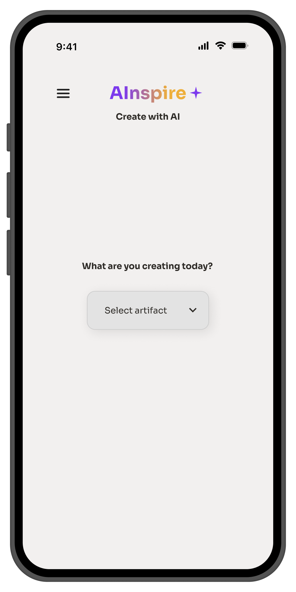
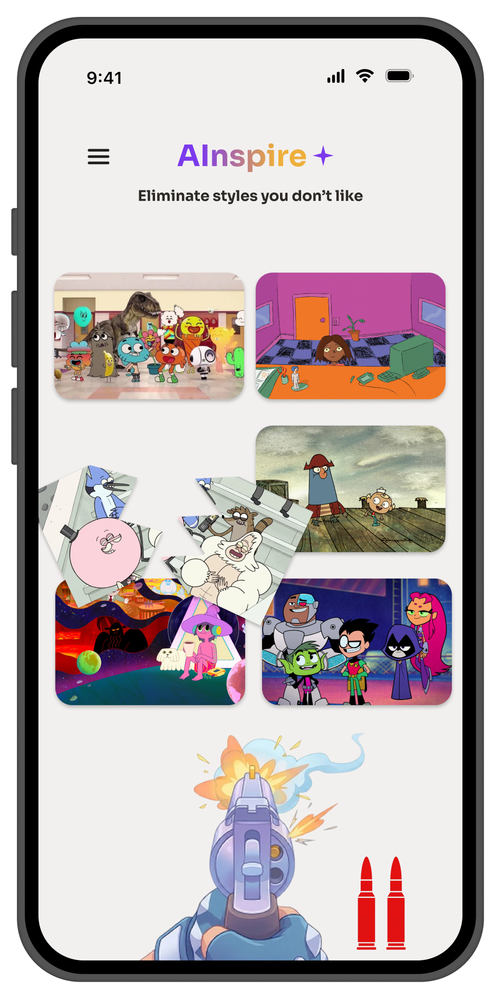
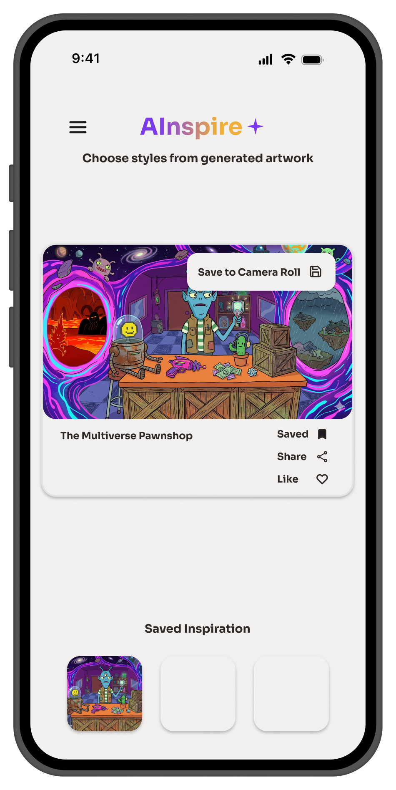
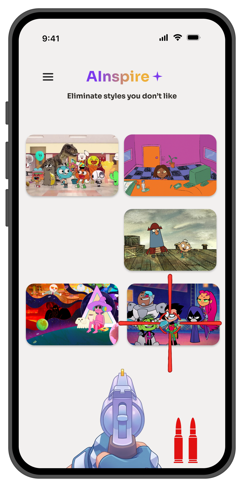
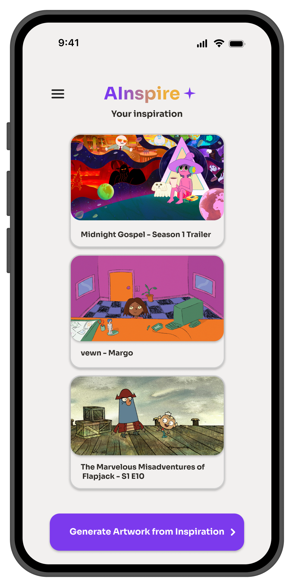

Rethinking Prompt Engineering
The concept moves away from text dependency to explore a workflow better suited to users who think through images, references, and visual comparison.
Reimagining generative AI through visual curation and direct manipulation.



01 — Overview
AInspire explores a non-traditional approach to generative AI by replacing text-heavy prompting with a visual, interactive workflow. Instead of translating an idea into precise prompt language, users guide their results through image selection, ranking, curation, and style-building.
Traditional text-prompt AI interfaces can create high cognitive load by asking users to translate visual ideas into precise vocabulary. This can lead to repeated trial and error when the user knows what they want visually but struggles to describe it through text.
AInspire introduces a feed-based visual curation experience where users select artifacts, eliminate unwanted styles, curate inspiration boards, and iteratively guide AI outputs through direct visual interaction.
02 — Exploration
The design process focused on exploring how familiar visual interactions could reduce dependence on written prompts while still giving users meaningful control over AI-generated results.
The concept moves away from text dependency to explore a workflow better suited to users who think through images, references, and visual comparison.
Familiar interactions such as dropdown artifact selectors, Pinterest-style feeds, and side drawers for saved assets provide recognizable ways to navigate an otherwise unconventional AI workflow.
Instead of abstract checkboxes or repeated prompt editing, AInspire explores an interactive elimination mechanic for quickly rejecting unwanted visual styles.
03 — Design Direction
The concept centers the creative process around selection and manipulation. Each interaction gives the user another way to communicate visual preferences without relying entirely on written descriptions.
Let users begin with visual references and artifacts instead of requiring a fully articulated text prompt.
Allow users to communicate what they like and dislike by directly manipulating visual options.
Use engaging interactions to make iterative style refinement feel less like repeated prompt correction.
04 — Design
The final concept creates a visual workflow that moves from choosing what to create, to exploring and narrowing aesthetic preferences, to collecting references that can guide future outputs.
Artifact selection gives users a concrete starting point for the creative process. Rather than beginning with an empty prompt field, users first identify the type of object or output they want to explore.
Rather than describing an aesthetic entirely through words, users browse generated visual references and identify the styles that resonate with them.
A gamified elimination interaction allows users to remove styles they do not want, turning preference tuning into a direct visual action instead of another round of text-prompt editing.

Selected references are brought together into a visible inspiration set, giving users a way to see the creative direction they have built before moving forward with generation.

05 — Outcome
Together, these interactions explore a different relationship between users and generative AI: one where visual choices and direct manipulation become part of the prompting process.
06 — Reflection
The project explored how replacing text-heavy prompting with tactile visual curation can lower barriers within creative AI workflows.
I learned how playful interactions can make an experience more engaging while still needing to support workflow efficiency and accessibility.
AInspire pushed me to think about generative AI as an interaction-design problem rather than assuming text input has to be the default interface.